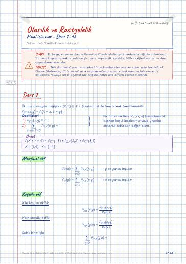

Olasılık ve Rastgelelik · Dijital ders notu
Final için not – Ders 7–12
- Ders
- Olasılık ve Rastgelelik (ELM218)
- Dönem
- 4. Dönem · 2022–2023 Bahar
- Biçim
- PDF · 22 sayfa · 0,2 MB · el yazısı görünümlü LaTeX
- Orijinal not
- Olasilik-Final-icin-Not.pdf

The digital notes were created from the handwritten notes with the help of Claude (Anthropic); they are meant as a supplementary resource and may contain errors. Always rely on the original notes and the official course materials.
Bu notta neler var?
- Ders 7
- Marjinal okf
- Koşullu okf
- İki sürekli rasgele değişken: Ortak oyf
- Marjinal oyf
- Ders 8
- Bir ayrık ve bir sürekli rasgele değişken
- Toplamsal Gauss gürültü kanalı
- Ortak bdf (birikimli dağılım fonksiyonu)
- Ders 9
- Bağımsız iki ayrık r.d.'nin toplamı
- Bağımsız iki sürekli r.d.'nin toplamı
- Beklenen değer
- korelasyon ve kovaryans
- Ders 9 Devamı
- Koşullu beklenti
- Bir rasgele değişken olarak koşullu beklenti
- Koşullu beklentinin ortalaması
- Yenilenen beklenti
- koşullu varyans
- Moment üreten fonksiyonlar
- Türev üreten fonksiyonun özellikleri
- Ders 10
- Çoklu rasgele değişkenler
- Bağımsızlık
- Rasgele değişkenlerin istatistiklerinin kestirimi
- En büyük olabilirlik kestirimi
- Ders 10 devamı
- Rasgele değişkenlerin toplamının ortalaması
- Örnek ortalaması kestiriminin ortalaması
- Rasgele değişkenlerin toplamının varyansı
- Örnek ortalaması kestiriminin varyansı
- Markov eşitsizliği
- Chebyshev eşitsizliği
- Ders 11
- Limit teoremleri
- Büyük sayıların zayıf yasası
- Güvenirlik aralığı
- Güvenirlik aralığı: Anketör problemi
- Gauss rasgele değişkenlerinin toplamı
- Ders 11 devamı
- Standart toplam
- Merkez limit teoremi (MLT)
- MLT ile güvenirlik aralığı
- Ders 12
- Rasgele süreçler
- Ortalama ve özilişki (otokorelasyon) fonksiyonları
- Durağan rasgele süreçler
- Gauss rasgele süreçleri
- Geniş anlamda durağan sürecin otokorelasyon fonksiyonu
- Otokorelasyon fonksiyonun yorumu
- Ders 12 devamı
- Güç spektral yoğunluğu
- Beyaz gürültü süreci
- Isıl gürültü
- Doğrusal zamanla-değişmeyen sistemlerin geniş anlamda durağan süreçlere yanıtı
Notun metni
Düz metin olarak göster (formüller ve çizimler yoktur)
İki ayrık rasgele değişken (X,Y)×Y ortak okf ile tam olarak tanımlanabilir.
X 'in koşullu okf'si:
Y 'nin koşullu okf'si:
Sabit bir x için
X ve Y ayrık rasgele değişkenleri aşağıdaki şartı sağlıyorsa bağımsızdır
İki sürekli rasgele değişken: Ortak oyf
İki sürekli rasgele değişen (X,Y)^2 ortak oyf f_X,Y(x,y) ile tam olarak tanımlanabilir
Örneğin dikdörtgen bir alan için
Okf bir olasılık değildir.Claude notu: muhtemelen ``oyf'' olmalı. Olasılıkla ilişkisi aşağıdaki gibidir:
Y 'nin koşullu oyf'si:
X 'in koşullu oyf'si:
Sabit bir x için f_Y|X(y|x) Y 'nin okf'sidir. f_Y|X(y|x)≥ 0 ve integrali 1'e eşit.
Bir ayrık ve bir sürekli rasgele değişken
X okf'si P_X(x) olan bir ayrık rasgele değişken olsun. Her X=x için, P_X(x)≠ 0 koşullu oyf'si f_Y|X(y|x) olan Y sürekli değişkeni olsun.
X 'in Y 'ye göre sonsal okf'si durumunda aşağıdaki gibi bulunabilir.
Toplamsal Gauss gürültü kanalı
Gönderilen bit ayrık bir rasgele değişken olarak modellenir:
Toplamsal gürültü bir Gauss r.d.'dir Z N(0,σ_Z^2)
Alınan işaret Y=X+Z şeklindedir ve burada X ve Z bağımsızdır
Ortak bdf (birikimli dağılım fonksiyonu)
İki r.d. (X,Y) ortak bdf F_X,Y(x,y) ile tam olarak tanımlanabilir.
Bir olayın olasılığı ortak bdf ile belirlenebilir
Örnek: \(x,y): a<x≤ b, c<y≤ d olayının olasılığı
(X,Y) rasgele değişkenleri sürekli ise
Bağımsız iki ayrık r.d.'nin toplamı
X ve Y bağımsız iki ayrık r.d. ve W=X+Y olsun. W 'nun dağılımı nedir?
X P_X(x) ve Y P_Y(y) tam sayı-değerli r.d.'ler olsun. Bu durumda toplamlarının okf'si:
X(λ_1) ve Y(λ_2) bağımsız iki r.d. ise bunların toplamı W 'nun okf'sini bulunuz.
Bağımsız iki sürekli r.d.'nin toplamı
X P_X(x) ayrık bir r.d. ve g(x) , x 'in bir fonksiyonu olsun.
Sürekli r.d. X f_X(x) için g(X) 'in beklentisi
korelasyon ve kovaryans
(X,Y) f_X,Y(x,y) ve g(x,y) , x ve y 'nin bir fonksiyonu olsun. g(X,Y) 'nin beklentisi aşağıdaki gibi tanımlanır.
Eğer Cov(X,Y)=0 ise
X ve Y birbirinden ilişkisizdir ve E[XY]=E[X] E[Y]
Eğer _X,Y=±1 ise için işaretler aynıdır).
doğrusal bir fonksiyonu ise _X,Y=±1 'dir.
_X,Y bize X 'in Y 'nin bir doğrusal fonksiyonu olarak ne kadar iyi kestirilebileceğinin bilgisini verir.
İki sürekli rasgele değişken (X,Y) f_X,Y(x,y) olsun
⇒ Herhangi bir g(x,y) fonksiyonun f_X|Y(x|y) 'ye göre beklentisi aşağıdaki gibi tanımlanabilir.
Bir rasgele değişken olarak koşullu beklenti
Koşullu beklenti E[g(X,Y)|Y=y] y 'nin bir fonksiyonudur. E[g(X,Y)|Y] beklenen değeri Y rasgele değişkenin bir fonksiyonu olduğu için bir rasgele değişkendir.
E[X|Y]=Z=1-Y2 'nin oyf'si bulmak için Y 'nin doğrusal bir fonksiyonun, Z=aY+b , okf'si için bulduğumuz formülü kullanabiliriz.
Koşullu beklentinin ortalaması
Burada E_X|Y , f_X|Y(x|y) 'ye göre beklentidir.
(X,Y) r.d.'leri için =y olarak verildiğinde X 'in koşullu varyansı aşağıdaki gibi tanımlanır
Moment üreten fonksiyonlar
Bir X rasgele değişkenin olasılık dağılımına ait dönüşüm aşağıdaki gibi tanımlanır:
Bu dönüşüme moment üreten fonksiyon denir.
s=jω için ( j=-1 ve ω gerçek) dönüşüm, M_X(jω) karakteristik fonksiyon adını alır.
Türev üreten fonksiyonun özellikleri
X P_X(x) olsun. M_X(s) 'nin s 'ye göre birinci dereceden türevi:
Bu türevin s=0 'daki değeri bize birinci momenti verir.
Türev almayı tekrarlasak
Çoklu rasgele değişkenler
X_1,X_2,…,X_n aynı olasılık uzayında tanımlanmış rasgele değişkenler olsun
Ayrık ise ortak okf
Sürekli ise ortak oyf
Marjinal oyf (okf)'ler _1,X_2,…,X_n 'nin bir alt kümesinin ortak oyf'sidir.
n=3 için marjinal oyf'ler
oyf, okf, zincir kuralı, bdf, Bayes de çalışır
X_1,X_2,…,X_n rasgele değişkenleri eğer ortak okf/oyf/bdf'leri marjinallerin çarpımı şeklinde yazılabiliyorsa bağımsızdır.
X_1,X_2,…,X_n rasgele değişkenleri bağımsız ve türdeş dağılımlı, eğer bağımsız ve aynı marjinal dağılım sahiplerse
Rasgele değişkenlerin istatistiklerinin kestirimi
X 'in ortalamasını kestirmek için
X 'in ikinci momentini kestirmek için:
P(X A) olasılığını kestirmek için x_i A iken y_i=1 diğer durumlarda y_i=0 olan bir değişken tanımlayalım.
(X,Y) 'nin korelasyonunu kestirmek için
En büyük olabilirlik kestirimi
X P_X(x;θ) ve θ parametresi bilinmiyor olsun.
θ 'yı kestirmek için P_X(x;θ) dağılımından bağımsız ve türdeş üretilmiş eğitim veri kümesi _i_i=1^n kullanalım.
En büyük olabilirlik kestiriminde eğitim veri kümesini üreten olabilirliği (likelihood) en büyük yapacak şekilde θ seçilir.
Daha sıklıkla olabilirliğin logaritması en büyüklenir.
X(p) ve p parametresi bilinmiyor olsun. p 'yi Bern(p) dağılımından bağımsız ve türdeş olarak üretilmiş eğitim veri kümesi _i_i=1^n kullanarak EOK ile bulalım
Burada 'nin türevini alıp sıfıra eşitleyelim
X N(μ,σ^2) ve θ=(μ,σ^2) parametreleri bilinmiyor olsun
Olabilirliği en büyük yapan μ ve σ^2 'yi bulmak için (μ,σ^2) 'nin μ ve σ^2 'ye göre kısmi türevlerini alıp sıfıra eşitleyelim!
Rasgele değişkenlerin toplamının ortalaması
X_1,X_2,…,X_n rasgele değişkenlerinin toplamı Y=Σ_i=1^nX_i olsun. Toplamlarının ortalaması aşağıdaki gibidir:
Binom rasgele değişkenlerinin ortalaması
Örnek ortalaması kestiriminin ortalaması
'dir. Örnek ortalamasının beklentisi:
Rasgele değişkenlerin toplamının varyansı